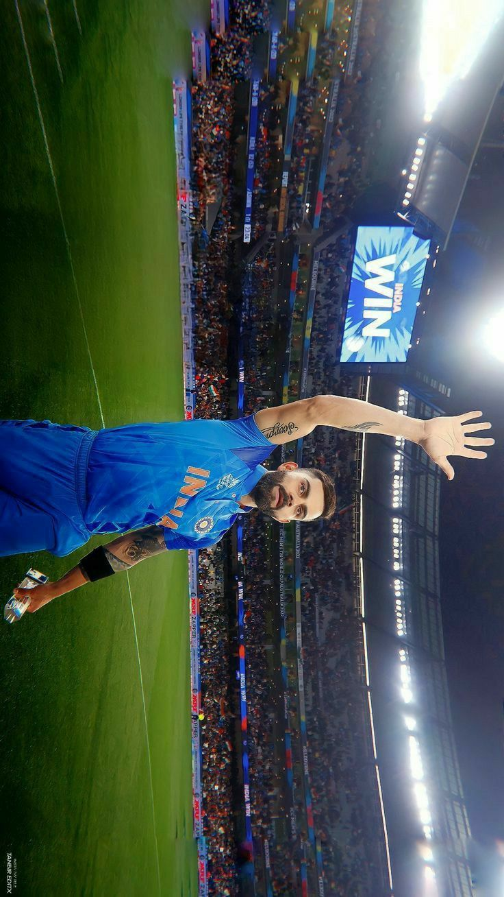

Virat Kohli

Career
Virat Kohli first came into the limelight in 2008, when he led the Indian U-19 cricket team to victory in
2008 U-19 Cricket World Cup He soon made his debut for the Indian team in August 2008.
during a ODI match against in Sri Lanka.
Virat also became one of the valuable Indian captain in Test cricket with 27 test wins, 12 overseas test
wins and highest winning percentage as captain in both Tests and ODIs.
Kohli was ranked eighth in ESPN's list of world's most famous sportspeople in 2016.
Virat is the only current player to have a stand named after him in Delhi Firoz Shah Kotla stadium to honour
his immaculate contributions to Indian cricket.
When West Delhi Cricket Academy was created in 1998, Kohli was part of its first batch and received training
under Rajkumar Sharma.
Kohli made his cricket debut in October 2002 with the Delhi Under-15 team in the 2002-03 Polly Umrigar Trophy and lead the team for the next trophy. He was later selected in the Delhi Under-17 team for the 2003-04 Vijay Merchant Trophy where he finished as the highest run-scorer.
At the age of 18, Kohli made his first-class debut for Delhi against Tamil Nadu wherein he scored 10 runs. In July 2006, he made his debut in the Under-19 team during India's tour of England. India won both ODI and Test series. Kohli made his T20 debut next year and emerged as the highest run-scorer in the Inter-State T20 Championship with 179 runs.
The year 2008 was a life-changing year for Kohli. First, he captained the Under-19 Cricket World Cup-winning team. Second, he was bought by RCB for $30,000 on a youth contract for IPL. Third, he made his international debut.
After recovering from a minor injury, Kohli replaced Gambhir for the tri-series in Sri Lanka and batter at no. 4 in the 2009 ICC Champions Trophy as Yuvraj Singh was recovering from an injury. For the tri-nation ODI tournament in Bangladesh in 2010, Tendulkar was rested, thereby enabling Kohli to play in each match. Due to his phenomenal performance in Bangladesh, he was praised by the then captain MS Dhoni.
Kohli was part of the World Cup-winning team in 2011 and became the first Indian batsman to score a century on World Cup debut. Kohli made his Test debut against West Indies at Kingston and performed poorly in the series, amassing just 76 runs in five innings. In 2015, he became the first Indian batsman to score a century against Pakistan in a World Cup match.
During South Africa's tour of India, he became the fastest batsman in the world to make 1,000 runs in T20I cricket, achieving the feat in his 27th innings. During the ODI tour of Australia, Kohli emerged as the fastest batsman in the world to cross the 7000-run mark in ODIs, and the fastest to score 25 centuries.
During the 3 match Test series against Sri Lanka at home in 2017, he became the first batsman to score six double hundreds as a captain. That year, he scored a total of 2818 international runs, the third-highest by an Indian in a calendar year and highest ever by an Indian player. In August 2018, he ranked no. 1 in the ICC Test rankings. With this, he became the seventh Indian batter to achieve this milestone. He became the first Indian, first captain and tenth overall to hit three successive centuries in ODIs in October 2018.
Kohli made his cricket debut in October 2002 with the Delhi Under-15 team in the 2002-03 Polly Umrigar Trophy and lead the team for the next trophy. He was later selected in the Delhi Under-17 team for the 2003-04 Vijay Merchant Trophy where he finished as the highest run-scorer.
At the age of 18, Kohli made his first-class debut for Delhi against Tamil Nadu wherein he scored 10 runs. In July 2006, he made his debut in the Under-19 team during India's tour of England. India won both ODI and Test series. Kohli made his T20 debut next year and emerged as the highest run-scorer in the Inter-State T20 Championship with 179 runs.
The year 2008 was a life-changing year for Kohli. First, he captained the Under-19 Cricket World Cup-winning team. Second, he was bought by RCB for $30,000 on a youth contract for IPL. Third, he made his international debut.
After recovering from a minor injury, Kohli replaced Gambhir for the tri-series in Sri Lanka and batter at no. 4 in the 2009 ICC Champions Trophy as Yuvraj Singh was recovering from an injury. For the tri-nation ODI tournament in Bangladesh in 2010, Tendulkar was rested, thereby enabling Kohli to play in each match. Due to his phenomenal performance in Bangladesh, he was praised by the then captain MS Dhoni.
Kohli was part of the World Cup-winning team in 2011 and became the first Indian batsman to score a century on World Cup debut. Kohli made his Test debut against West Indies at Kingston and performed poorly in the series, amassing just 76 runs in five innings. In 2015, he became the first Indian batsman to score a century against Pakistan in a World Cup match.
During South Africa's tour of India, he became the fastest batsman in the world to make 1,000 runs in T20I cricket, achieving the feat in his 27th innings. During the ODI tour of Australia, Kohli emerged as the fastest batsman in the world to cross the 7000-run mark in ODIs, and the fastest to score 25 centuries.
During the 3 match Test series against Sri Lanka at home in 2017, he became the first batsman to score six double hundreds as a captain. That year, he scored a total of 2818 international runs, the third-highest by an Indian in a calendar year and highest ever by an Indian player. In August 2018, he ranked no. 1 in the ICC Test rankings. With this, he became the seventh Indian batter to achieve this milestone. He became the first Indian, first captain and tenth overall to hit three successive centuries in ODIs in October 2018.
Debut matches
| format | debut |
|---|---|
| test | 20 June 2011 against West Indies |
| ODI | 18 August 2008 aga inst Sri Lanka |
| T20I | 12 June 2010 against Zimbabwe |
Batting Summary
| format | matches | innings | runs | highest score | 100s | 50s |
|---|---|---|---|---|---|---|
| test | 99 | 168 | 7962 | 254* | 27 | 28 |
| ODI | 254 | 245 | 12169 | 183 | 43 | 62 |
| T20I | 95 | 87 | 3227 | 94* | 0 | 29 |
| FC | 131 | 216 | 10211 | 254* | 34 | 36 |
| List A | 288 | 278 | 13611 | 183 | 47 | 70 |
| T20 | 324 | 307 | 10204 | 113 | 5 | 75 |
Personal life

He started dating Bollywood actress Anushka Sharma in 2013.
They got married on 11 December 2017 in Florence,Italy.
The couple had their first child, a daughter in January 2021.
his parents are Saroj Kohli (Mother) Prem Kohli (Father).
Virat Kohli plays for Royal Challengers Bangalore in IPL in India
Virat Kohlis Batting cricket ICC rankings as of 2023.
He is rated as one of India's best cricket captains in terms of wins and winning percentages.
He is ranked the 4th best captain for India if all time.
He is the highest run scorer in T20 cricket for all time, the 5th best in ODI cricket and 28th best in
Test's
for
all time as of 2023.
National honours
- 2013 - Arjuna Award, second highest sporting honour.
- 2017 - Padma Shri Ribbon.svg Padma Shri , India's fourth highest civilian award.
- 2018 - Major Dhyan Chand Khel Ratna Award, India's highest sporting honour.
Sporting honours
- Sir Garfield Sobers Trophy (ICC Men's Cricketer of the Decade): 2011–2020
- Sir Garfield Sobers Trophy (ICC Cricketer of the Year): 2017,2018
- ICC ODI Player of the Year: 2012,2017,2018
- ICC Test Player of the Year: 2018
- ICC ODI Team of the Year: 2012,2014, 2016 (captain),2017 (captain),2018 (captain),2019 (captain)
- ICC Test Team of the Year: 2017 (captain),2018 (captain),2019 (captain)
- ICC Men's T20I Team of the Year: 2022
- ICC Spirit of Cricket: 2019
- ICC Men's ODI Cricketer of the Decade: 2011–2020
- ICC Men's Test Team of the Decade: 2011–2020 (captain)
- ICC Men's ODI Team of the Decade: 2011–2020
- ICC Men's T20I Team of the Decade: 2011–2020
- Polly Umrigar Award for International Cricketer of the Year: 2011–12, 2014–15, 2015–16, 2016–17, 2017–18
- Wisden Leading Cricketer in the World: 2016, 2017, 2018
- ICC Men's Player of the Month: October 2022
- CEAT International Cricketer of the Year: 2011–12, 2013–14,2017– 18, 2018–19
- Indian Premier League Orange Cap for most runs: 2016
- Barmy Army – International Player of Year: 2017, 2018
- ESPNcricinfo – ODI Batting Performance of the Year: 2012
- People's Choice Awards India For Favourite Sportsperson: 2012
- GQ Sportsman of the year: 2013
- CNN-News18 Indian of the Year: 2017
- Delhi & District Cricket Association (DDCA) renamed a stand after Kohli at Feroz Shah Kotla, Delhi.